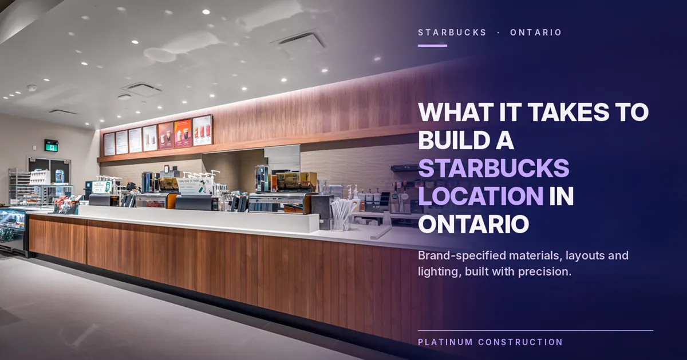
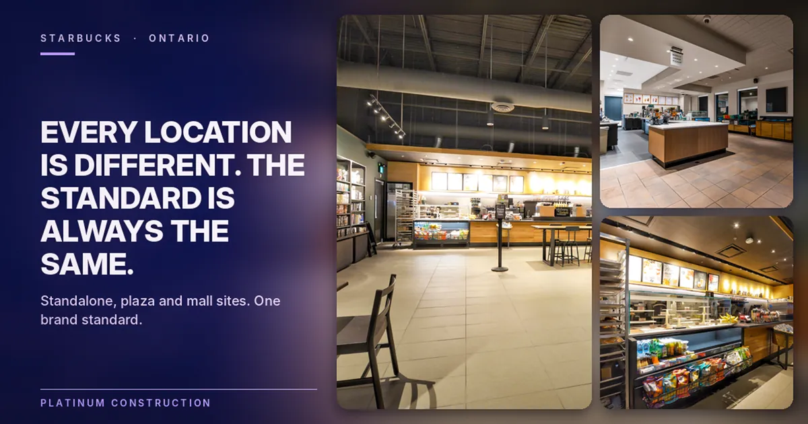
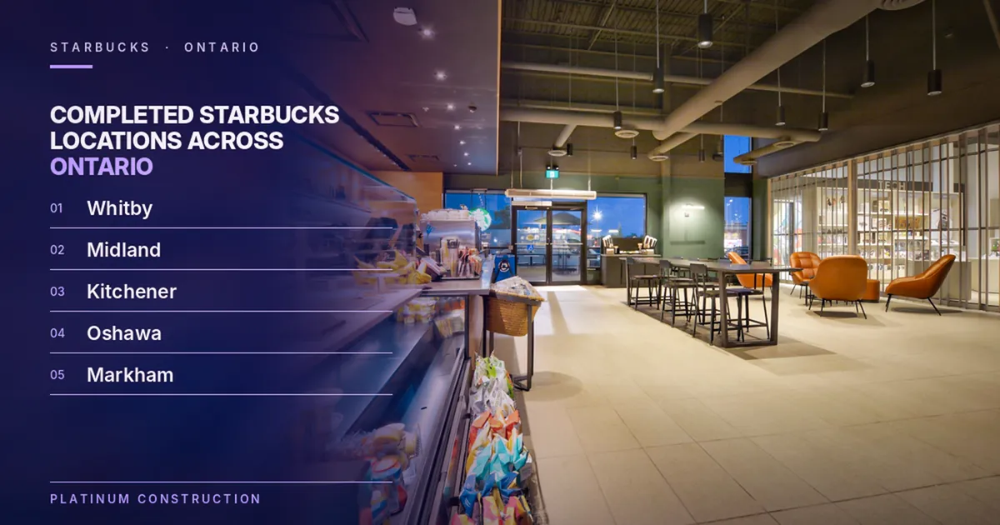
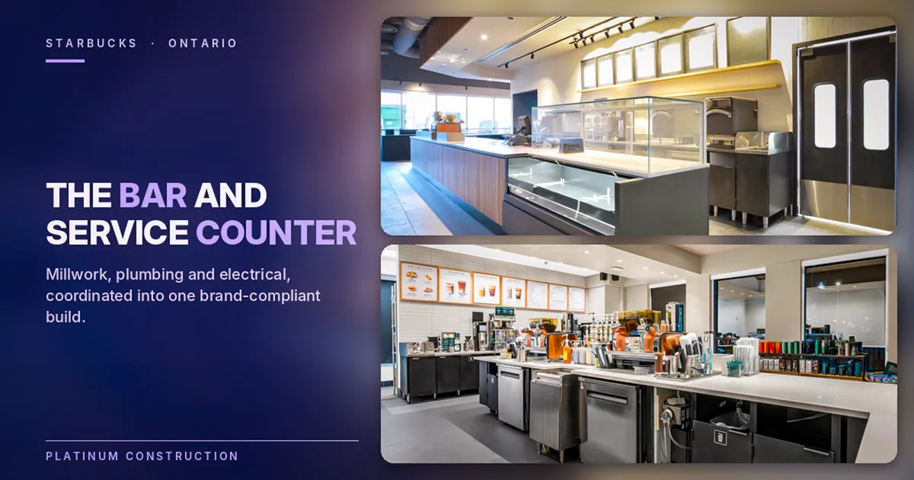
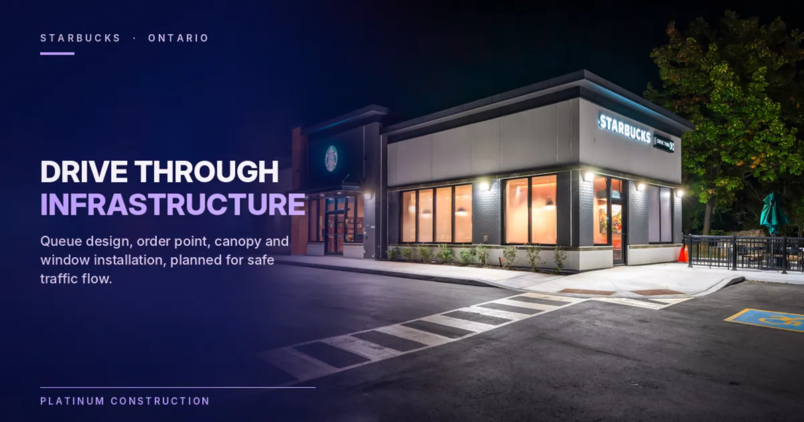
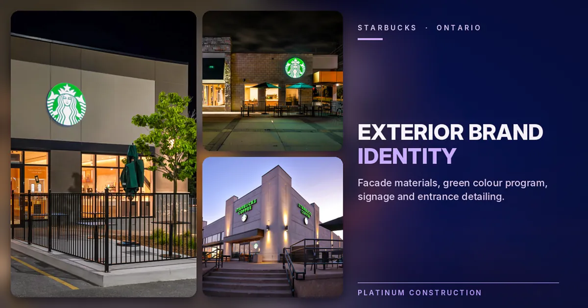
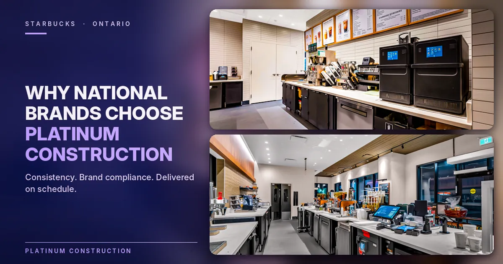
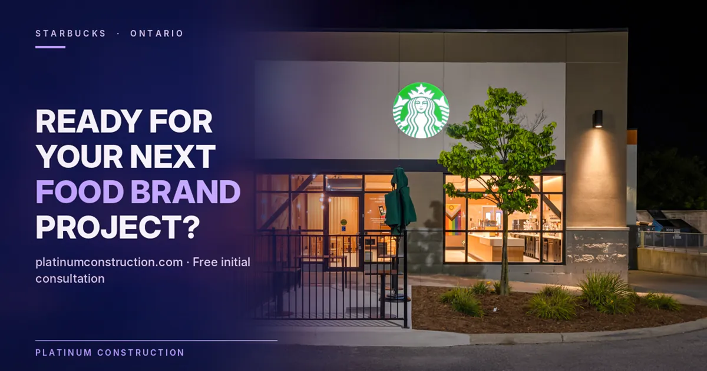

Platinum Construction has delivered that execution across multiple completed Starbucks locations in Ontario. From Whitby and Midland to Kitchener, Oshawa, and Markham, our team has built Starbucks locations that meet the brand's demanding construction specifications, satisfy local municipal requirements, and open on schedule for business.
This post covers what Starbucks construction actually involves, what our completed portfolio across Ontario demonstrates, and why Platinum Construction has become a trusted commercial construction partner for one of the world's most recognized food and beverage brands.

What It Takes to Build a Starbucks Location in Ontario
Building a Starbucks is not like building a standard coffee shop. The brand has a comprehensive construction program that governs nearly every decision made during the build process. Materials are specified. Millwork profiles are defined. Lighting types and placement are prescribed. The customer journey through the space, from entry to order to pickup, is designed intentionally and needs to be built intentionally.
For a construction company in Vaughan and across Ontario, earning a place in a brand program like Starbucks means demonstrating the capability to execute those specifications consistently, across different building types, different municipalities, and different physical site conditions, while maintaining the same standard at every location.
Platinum Construction has built that track record across Ontario, and our Starbucks portfolio is one of the clearest demonstrations of that capability.

Every Location Is Different but the Standard Is Always the Same
One of the things that makes Starbucks construction genuinely challenging is that no two sites are identical. A Starbucks in a standalone drive through building in Oshawa operates in a completely different physical environment than one integrated into a retail plaza in Kitchener or a mall setting in Markham. Site dimensions, parking configurations, utility connections, neighbouring tenant relationships, and municipal requirements all vary.
What does not vary is the brand standard. Our job as commercial builders is to deliver that consistent standard regardless of what each individual site presents. That requires a construction team that is comfortable making site specific decisions while keeping the brand outcome as the non negotiable target.

Platinum Construction's Completed Starbucks Locations Across Ontario
Our gallery at platinumconstruction.com documents the full scope of completed Starbucks builds Platinum Construction has delivered across Ontario. Here is a clear picture of that portfolio.
| Location | City | Build Type |
|---|---|---|
| Garden St | Whitby, ON | Commercial location, 29 photos |
| Midland location | Midland, ON | Commercial location, 25 photos |
| Fischer Hallman | Kitchener, ON | Commercial location, 20 photos |
| Ritson Rd | Oshawa, ON | Commercial location, 41 photos |
| Markville Mall | Markham, ON | Mall integrated location, 25 photos |
Five completed Starbucks locations across five different Ontario markets. Each one delivered to brand standard. Each one documented in full on our project gallery.
This range of completed locations across different Ontario cities reflects both the geographic reach of our commercial construction capability and the consistency of our execution from one project to the next.
What the Construction of a Starbucks Location Actually Involves
For brand operators, franchise developers, and commercial property managers who have not been through a Starbucks build before, the scope is more involved than the finished space suggests.

The Bar and Service Counter
The customer experience in every Starbucks is built around the bar. Counter height, counter depth, the positioning of the handoff area, the placement of equipment from espresso machines to blenders to display cases, and the materials used across every surface are all specified in precise detail. Building the bar correctly is not just a millwork task. It requires coordination between the carpentry trade, the plumbing rough in for equipment water lines, the electrical circuits for every piece of bar equipment, and the final brand compliance review.
A commercial construction company that has built Starbucks locations before knows how to sequence this work so each trade is ready when the next one arrives, rather than backing up behind each other and losing days that push the opening date.

Drive Through Infrastructure
Several of our completed Ontario Starbucks locations include drive through infrastructure. Drive through construction involves more than installing a window. It requires careful site planning for vehicle queue length, order point positioning, speaker and intercom system installation, canopy or weather protection structure, and traffic flow that works safely within the site boundaries and local municipal requirements.
Getting drive through construction right requires a building construction company with experience in this specific format, not just general commercial construction knowledge.

Exterior Brand Identity
Starbucks locations are immediately recognizable from the street, and that recognition is the result of precise exterior construction. Facade materials, the green colour program, signage mounting and illumination, window configurations, and entrance detailing are all specified by the brand and need to be executed with the same precision as the interior.
Our completed locations across Whitby, Midland, Kitchener, Oshawa, and Markham all reflect this exterior brand standard, which is visible in the project photography documented in our gallery.
Mechanical and Ventilation Requirements
A Starbucks is a food production environment operating at high volume throughout the day. Ventilation requirements, grease management, and HVAC sizing for the occupancy and equipment load all need to meet both the brand's specifications and local health authority requirements.
As a best construction company for food service builds, we coordinate these mechanical requirements as a core part of the construction plan, not an afterthought that gets figured out during the final inspection stage.
Here is a practical overview of the key construction elements in a typical Starbucks build out.
| Construction Element | What It Involves |
|---|---|
| Bar and counter construction | Brand specified millwork, equipment rough in, electrical and plumbing connections |
| Drive through infrastructure | Queue design, order point, canopy, intercom and window installation |
| Exterior facade | Brand colour program, signage, window and entrance detailing |
| Interior finishes | Brand specified flooring, wall treatments, ceiling design, and lighting |
| Mechanical systems | Ventilation, HVAC, grease management sized for food service occupancy |
| Seating and customer areas | Furniture placement, electrical for charging stations, lighting zones |
| Health authority compliance | Meeting local public health requirements for food preparation and service |

Why National Brands Choose Platinum Construction for Ontario Projects
There is a straightforward reason why national food and beverage brands return to Platinum Construction for project after project across Ontario. Consistency.
A brand like Starbucks does not have time to manage a construction partner who needs to be guided through the process, corrected during brand reviews, or followed up with constantly to keep the project on track. They need a commercial construction company that reads the specifications, asks the right questions early, and delivers a finished location that passes inspection the first time.
That is the standard we hold ourselves to on every project we take on, and it is the standard our Starbucks portfolio across Ontario reflects.
Our construction teams work across Vaughan, Mississauga, Markham, Whitby, Oshawa, Kitchener, Midland, and surrounding Ontario markets. We understand how permit timelines vary across different municipalities, how mall management frameworks affect build schedules in retail settings, and how to coordinate the sequence of trades in a way that keeps projects moving efficiently from start to finish.
We also bring this same capability to every other type of commercial build we take on across Ontario. Industrial construction companies, office developers, retail brands, and food service operators across the province all benefit from the same project management discipline that our Starbucks and food brand portfolio demonstrates.
The Broader Platinum Construction Food Brand Portfolio
Our Starbucks locations represent one part of a broader food brand portfolio that Platinum Construction has built across Ontario. As our gallery at platinumconstruction.com shows, we have also completed builds for Chipotle Mexican Grill, Edo Japan, and Tim Hortons across multiple Ontario markets.
This breadth of food brand experience gives us a comprehensive understanding of how different brands approach construction, what their compliance processes look like, and how to manage the specific demands of food service builds across different physical environments.
For brand operators and commercial developers planning new Ontario locations, this portfolio represents something genuinely valuable. A construction partner who already knows how to work within national brand programs, navigate Ontario's diverse municipal landscape, and deliver consistent results across projects of different scales and formats.
Frequently Asked Questions
Has Platinum Construction built Starbucks locations in Ontario?
Yes. Platinum Construction has completed Starbucks locations in Whitby, Midland, Kitchener, Oshawa, and Markham, all documented in our project gallery at platinumconstruction.com.
What makes Starbucks construction more complex than a standard commercial build?
Starbucks locations require precise execution of detailed brand specifications across millwork, mechanical systems, exterior identity, and drive through infrastructure, all while meeting local municipal and health authority requirements.
How does Platinum Construction ensure brand compliance during a Starbucks build?
Brand construction documents are reviewed before planning begins, specifications are communicated to every trade, and compliance checks are built into every phase of construction rather than left to the final inspection.
Does Platinum Construction build drive through locations?
Yes. Several of our completed Ontario locations include drive through infrastructure, and we have experience with the site planning, queue design, and technical installation that drive through construction requires.
What Ontario markets does Platinum Construction serve for commercial food brand builds?
We serve clients across the Greater Toronto Area, Vaughan, Mississauga, Markham, Whitby, Oshawa, Kitchener, Midland, and surrounding Ontario communities.
How long does a Starbucks build out typically take in Ontario?
Most Starbucks build outs run between eight and sixteen weeks from construction start to opening, depending on the format, site conditions, and municipal permit timelines.
How do I contact Platinum Construction about a food brand construction project?
Visit platinumconstruction.com to reach our team directly. We offer a free initial consultation to discuss your project scope, location requirements, and timeline.

Final Thoughts
The completed Starbucks portfolio across Whitby, Midland, Kitchener, Oshawa, and Markham represents more than a list of finished buildings. It represents Platinum Construction's proven ability to execute national brand construction standards consistently across different Ontario markets, different site types, and different operational formats.
If you are a food brand operator, a franchise developer, or a commercial property manager planning Starbucks or other food brand construction projects in Vaughan or anywhere across Ontario, Platinum Construction is the construction company in Vaughan with the experience, the portfolio, and the processes to deliver your project to the standard it deserves. Visit platinumconstruction.com to start the conversation today.